Text Parsing and Text Analysis of a Periodic Report (with R)
Those of you non-academia folk who work in industry (like me) are probably conscious of any/all periodic reports that an independent entity publishes for your company’s industry. For example, in the insurance industry in the United States, the Federal Insurance Office of the U.S. Department of the Treasury publishes several reports on an annual basis discussing the industry at large, like this past year’s Annual Report on the Insurance Industry. (Admittedly, these kinds of reports are not always the most interesting things to read, but they are (usually) very informative.)
The same goes for the electricity grid and markets operated by the Electric Reliability Council of Texas (ERCOT) in Texas (which just so happens to be particularly relevant to me). Potomac Economics publishes an annual report “providing an independent assessment of the competitive performance and operational efficiency of the market” operated by ERCOT. This report tends to be pretty long—over 160 pages in every reports since 2016. A relatively large amount of the content is replication of language, figures, and tables from the prior years’ report, substituting and updating numbers from the past year. 1 As an annual reader of said report, I wish it were easier to “parse out” the most important things from a given year’s report. 2
With that in mind, I thought I would take a shot at using text analysis to compare Potomac Economics’ annual reports on ERCOT for three years—2016, 2017, and 2018—to, among other things, identify the most “unique” things in each report. This kind of analysis can enhance one’s understanding of current grid and market trends, as well as make one aware of things to look out for in the future.
While I initially planned on doing some kind of code tutorial with this project (primarily to demonstrate techniques for parsing and cleaning PDF text with R), I found that the code became more complex than I would have liked 3. (Let’s just say that regular expressions were my best friend.) Instead, I decided to focus this post the visuals I created, providing some brief commentary where needed.
Nonetheless, I think a high-level description of my “process” may be useful to the reader, as I think it is probably generalizable to any project of this likeness (i.e. text analysis of similarly structured documents). (For those who are interested in the code, it can all be found in this GitHub repo.) My approach (using R, of course can be simplified to the following set of steps.
Download the reports to a local directory and create a data frame with the year and file location of the report.
Import the raw text for each report to create a singular data frame with nested data frames storing the text for each year’s report.
“Unnest” the singular data frame to create a “long” data frame where each row represents a page in the reports.
Split this long data frame (with pages as observations) into two data frames, one for the table of contents (TOC) for each report and another for the body of each report.
Clean the two data frames (for TOC and body content) separately.
Create “child” data frames as needed for analysis, and make plots for key insights from this analysis.
From this breakdown of the steps, it is evident that the effort that goes into the data pre-processing (i.e. steps 1 through 5) makes up most of the work! What most people perceive to be “data analysis” is all in step 6. In this case, the saying about “80% of data science is really data cleaning” could not be any truer.
So, what exactly does this report look like? Well, you could always open up one of the reports yourself and peruse the 160+ pages 4, but maybe the following screenshot of the 2018 report can provide some visual context. (If for nothing else, I thought this would be fun to look at.) I borrowed some code that data visualization phenom Nathan Yau demonstrated in a short write-up at his awesome website FlowingData.
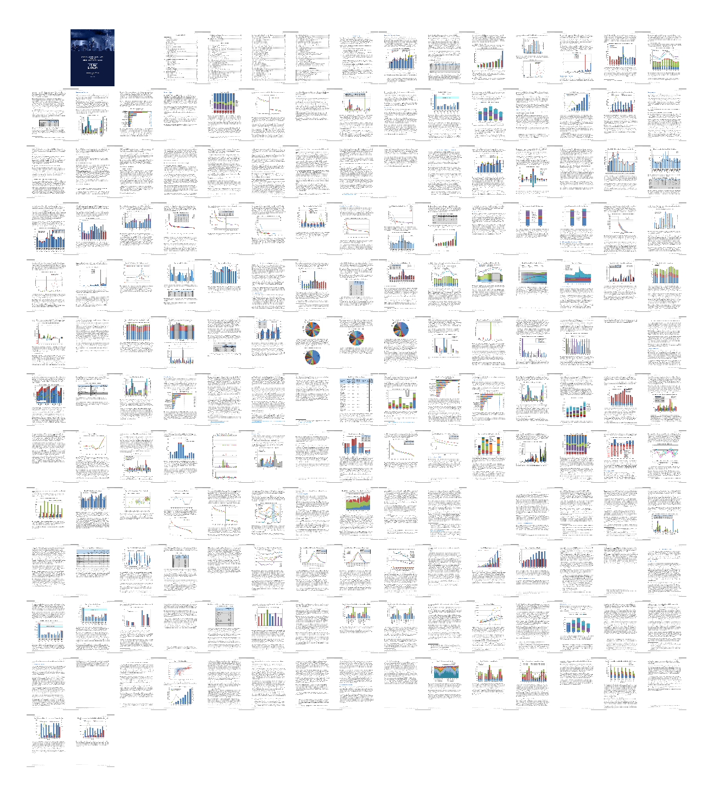
You can really get an idea of the vast amount of charts and tables that make up each one of these reports just from this one figure!
Next, let’s begin to shape out this initial holistic perspective of the reports with some analysis of the table of contents (TOC). This may seem trivial, but I assure you that it’s not! With a large document like this, we really ought to have a solid understanding of the content that the document discusses.
Each document’s TOC is broken down into a couple of sections, including:
An outline for the executive summary (on the first page of the TOC);
An outline of the first- and second-level sections of the body of the document (also starting on the first page of the TOC);
A list of figures (starting on the second page of the TOC);
A list of tables (on the fourth page).
Screenshots of parts of the TOC of the 2018 report are shown below.
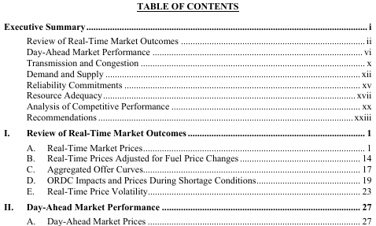
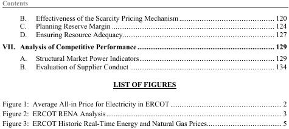
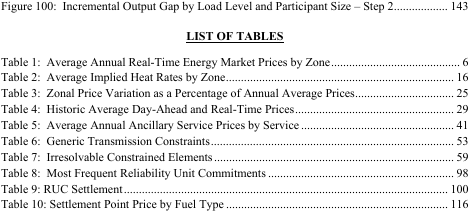
A first question we might ask is “How do (counts of) the lists of figures and tables correspond to the sections of the text?” (For the sake of readability, I’ve truncated some of the section labels, e.g. “Review of Real-Time Market Outcomes” was truncated to just “RTM”, which is an abbreviation for Real-Time Market.)
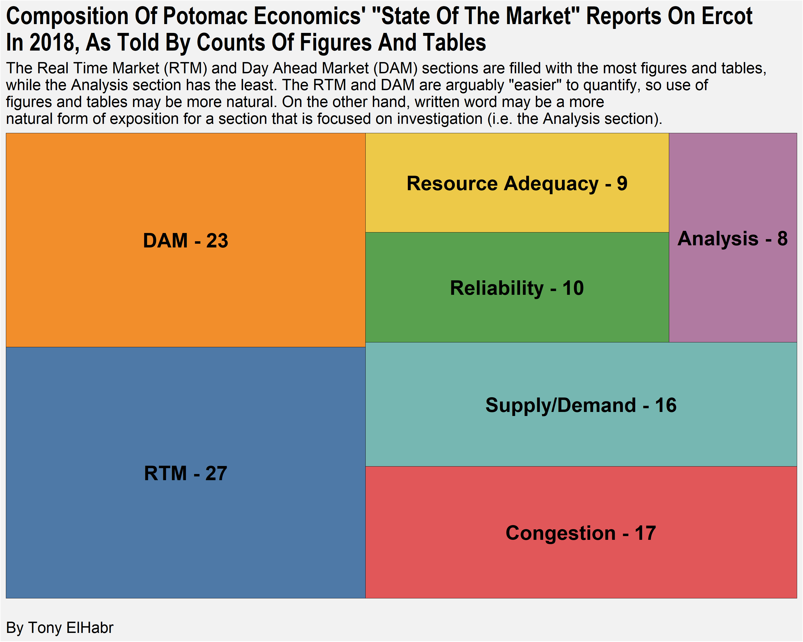
So we see that the Real-Time Market (RTM) and Day-Ahead Market (DAM) sections seem to make a larger-than-equal share of the reports in terms of simple counts of figures and tables. We might hypothesize that these things are arguably the “easiest” things to track in a graphical or quantitative manner among the many aspects of electricity markets and grid operations. Conversely, we see that the Analysis section (truncated from “Analysis of Competitive Performance”) leverages plots and tables the least. We might say that this supports our hypothesis that, in a few words, may be stated as “easy-to-quantify topics have more figures and tables”. The section labels “Analysis” (shortend from “Analysis of Competitive Performance” for visualization purposes) suggests that its content is “deeper” in nature, and that its may not be quite as easy to illustrate via figures and tables.
Our initial hypothesis—that easy-to-quantify topics have more figures and tables—seems reasonable enough, but is it just a direct consequence of the sections having more pages? We can plot the number of pages per section against the count of sections to help us answer this question.
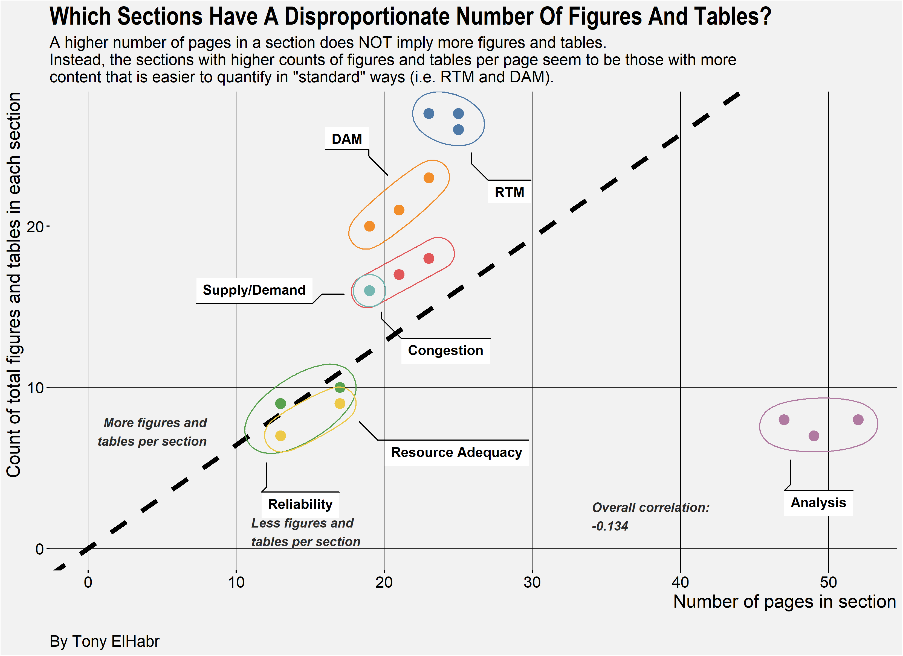
So it seems that those sections having more pages do NOT necessarily have more figures and tables. So our hypothesis still seems reasonable.
You might have noticed that the first plot (the “treemap”) only showed data for the 2018 report. I didn’t deem it necessary/helpful to make the same plot for each of the three reports from 2016 through 2018 because, as it turns out, the TOC of the three reports are nearly identical in composition! (Really, this is probably unsurprising.) That is, they have identical—or near identical—names and indexes for sections, figures, and tables. From an analysis point of view, this is good–the structure of the three reports facilitates direct comparison.
But note that I say that the TOCs as nearly identical, not exactly identical. What exactly are the differences between the three? More specifically, we might be curious to know which figures and tables were only in one of the three reports.
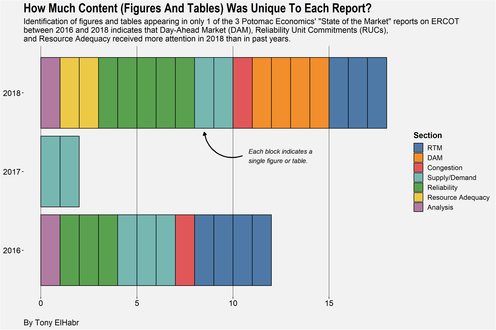
Aha! We see that the 2016 and 2018 reports had more than a handful of figures and tables that were unique to those reports. The table below lists exactly which figures and tables those are.
| Year | Section | Type | Label |
|---|---|---|---|
| 2016 | RTM | figure | implied heat rate duration curve top 2 percent of hours |
| 2016 | RTM | figure | aggregated peak hour generation offer stack |
| 2016 | RTM | figure | load, reserves and prices in august |
| 2016 | Supply/Demand | figure | load duration curve top five percent of hours |
| 2016 | Supply/Demand | figure | historic coal generation and capacity factor |
| 2016 | Supply/Demand | figure | top and bottom ten percent of net load |
| 2016 | Reliability | figure | frequency of reliability unit commitments |
| 2016 | Reliability | figure | average on-line summer reserves |
| 2016 | Reliability | figure | potential for combined cycle capacity available to ruc in houston |
| 2016 | Analysis | figure | surplus capacity |
| 2016 | RTM | table | 15-minute price changes as a percentage of annual average prices |
| 2016 | Congestion | table | irresolvable elements |
| 2017 | Supply/Demand | figure | load duration curve top five percent of hours with highest load |
| 2017 | Supply/Demand | figure | energy transacted across dc ties in august |
| 2018 | RTM | figure | ercot rena analysis |
| 2018 | RTM | figure | average real-time energy price spikes |
| 2018 | RTM | figure | monthly load exposure |
| 2018 | DAM | figure | daily collateral |
| 2018 | DAM | figure | average costs of procured sasm ancillary services |
| 2018 | DAM | figure | ercot-wide net ancillary service shortages |
| 2018 | DAM | figure | qse-portfolio net ancillary service shortages |
| 2018 | Congestion | figure | [year] crr auction revenue |
| 2018 | Supply/Demand | figure | load duration curve top 5% of hours with highest load |
| 2018 | Supply/Demand | figure | annual energy transacted across dc ties |
| 2018 | Reliability | figure | capacity commitment timing july and august hour ending 17 |
| 2018 | Reliability | figure | real-time to cop comparisons for renewable capacity |
| 2018 | Reliability | figure | real-time to cop comparisons for thermal capacity |
| 2018 | Reliability | figure | standard deviations of real-time to cop capacity differences |
| 2018 | Resource Adequacy | figure | west zone net revenues |
| 2018 | Resource Adequacy | figure | net revenues by generation resource type |
| 2018 | Analysis | figure | derating, planned outages and forced outages |
| 2018 | Reliability | table | ruc settlement |
Ok, enough about the TOC. Let’s see what kind of things we can learn about the text.
We saw that some sections have many more figures and tables than others and that this does not necessarily correlate with the number of pages in the section. Is there some kind of correlation with the number of sentences of text in each section?
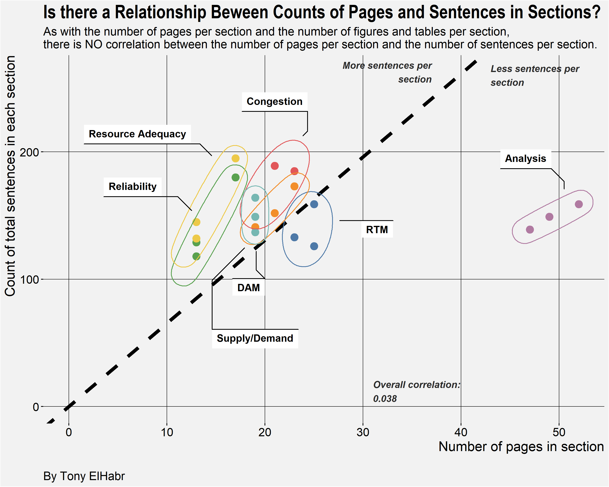
It may (or may not) be surprising to find a lack of a relationship here. Given our previous finding that the number of figures and tables and the number of pages in a given section are not really related. 5
Next, I think it is interesting to look at how the counts of sentences per section has changed over time.
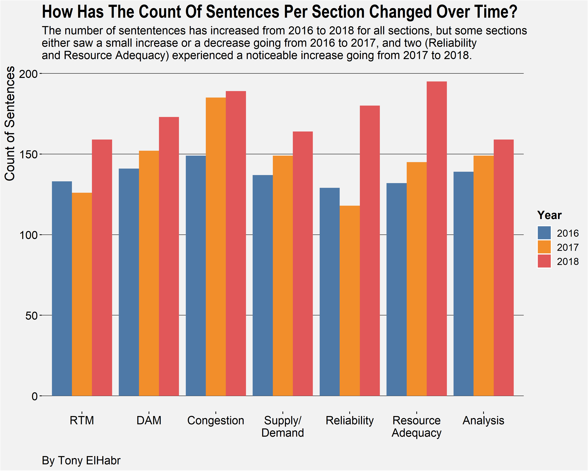
The first thing we might notice from the plot is that the number of sentences has increased across all sections from their totals in 2016. Ok, so maybe that’s not so interesting—I think it’s reasonable to assume that an annual report like this incrementally adds on its “foundation” from the prior year(s).
Perhaps the most interesting that we might observe from this graph is the “leaps” in the sentence counts from 2017 to 2018 for the Reliability and Resource Adequacy sections. One might draw a connection between this and what we observed earlier when looking at the figures and tables that were unique to a single report. There were more than a handful of observations for Resource Adequacy and Reliability (2 and 5 respectively) exclusive to the 2018 report.
A final takeaway that I have from this chart is the “evenness” of the counts across the sections (which wasn’t quite as obvious in the previous plot depicting sentence counts). The difference between the maximum and the minimum number of sentences per section in a given year is always below 50. Personally, I might have expected greater variation. Either way, it doesn’t really say anything about the “goodness” of the content; this is just something—the count of sentences in a section of a long document—for which I don’t really have a strong prior knowledge. 6
Ok, so the prior plot wasn’t so complex, so let’s now look at something more complicated and which deserves some explanation.
One of the things that I really wanted to investigate when I started this analysis was “text similarity”—just how much of each report is “boiler-plate, copy-paste” text? There are lots of ways of going about quantifying this. (Just do an Internet search for Natural Language Processing (NLP) and word embeddings and see what kind of rabbit hole that takes you down.) I decided to use cosine similarity 7 of sentences. 8
To provide a kind of “baseline” expectation of what these cosine similarity values might be, see the table below. It provides a handful of simple examples of the cosine similarity for singular strings of characters. 9
| Case | Description | String 1 | String 2 | Cosine Similarity |
|---|---|---|---|---|
| 1 | Identical strings. | abcde | abcde | 1.00 |
| 2 | One different character (“z” in String 2 instead of “a”). | abcde | zbcde | 0.80 |
| 3 | Two different characters (“z” and “y” in String 2 instead of “a” and “b”). | abcde | zycde | 0.60 |
| 4 | All different characters. | abcde | fghij | 0.00 |
| 5 | Different ordering of characters, but identical characters. | abcde | baecd | 1.00 |
| 6 | Repeated characters (“a” in String 2), one-character difference in string lengths. | abcde | aabcde | 0.95 |
| 7 | Repeated characters (“a” twice in String 2), two-character difference in string lengths. | abcde | aaabcde | 0.87 |
| 8 | Same characters, one additional character (“z” in String 2) in one string. | abcde | abcdef | 0.91 |
| 9 | Same characters, one additional character (“e” in String 1) in one string. | abcde | abcd | 0.89 |
Cases 2 and 3 in the table above are probably the most illustrative of the cosine similarity calculation. In case 2, a one-character difference in two strings having five characters total results in a value of 0.8. (i.e. Four of five characters matched.) In case 3, a two-character difference (given the same setup) results in a value of 0.6. (i.e. Three of five characters matched.)
Note that the cosine similarity calculation is identical for different types of text tokens (i.e. sentences, paragraphs, etc.). In general, the calculated values are likely to be smaller for longer tokens.
Ok, so given the above examples and explanation, we now have some context for understanding (and appreciating) the high degree of sentence similarity demonstrated across the reports, as illustrated in the figure below.
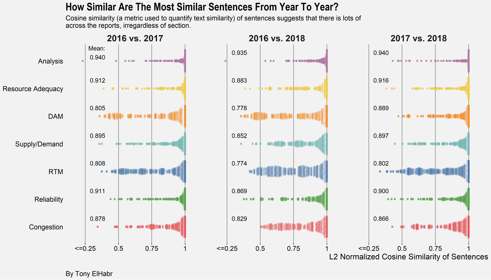
If you have read the reports, you’ll realize that there are lots of “repeated” sentences across the documents. For example, take the description of the first figure in 2018: “Figure 1 summarizes changes in energy prices and other market costs by showing the all-in price of electricity, which is a measure of the total cost of serving load in ERCOT for 2016 through 2018.” The “same” sentence in the 2017 report is “Figure 1 summarizes changes in energy prices and other market costs by showing the all-in price of electricity, which is a measure of the total cost of serving load in ERCOT for 2015 through 2017.” Just by inspection, you can tell that these two sentences would have a cosine similarity almost equal to 1. In fact, I did some extra text-processing—most notably, replacing year and months with generic labels, e.g. “[year]” and “[month]”—that would make these two sentences appear exactly identical (and, consequently, have a cosine similarity of exactly 1). This whole effort to quantify of sentence similarity was probably the most interesting thing to me out of this entire analysis! 10
I think that’s enough about sentences. Let’s next explore what we might learn from just the words.
One of the best ways to gauge “importance” of words (or any kind of text token) across multiple documents is term-frequency, inverse-document-frequency (TF-IDF). 11
First, let’s use TFIDF to identify which sections have the most “unique” words (aggregating across the three reports).
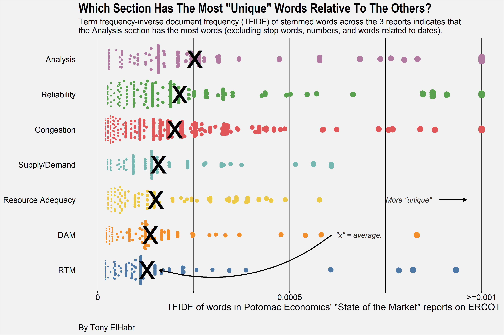
So we see that the Analysis section appears to be the most unique from this perspective. This deduction can be interpreted as an extension of the hypothesis developed earlier—that easy-to-quantify topics have more figures and tables. The extension of this notion can be stated explicitly as “easy-to-quantify topics” have less unique words.
What exactly are some of the words that were identified as the most unique?
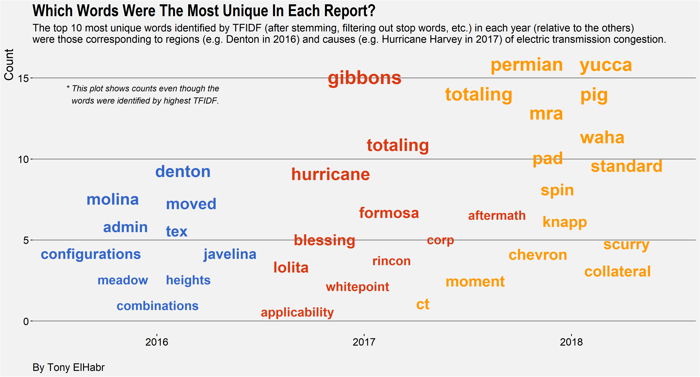
The “chatter” plot 12 above depicts the most unique words identified by TFIDF (after applying common text processing techniques such as “stemming” and dropping “stop words”). Several of the words shown happen to be words associated with sources of high electric transmission congestion 13 in the Texas grid during the year for the which the report was made. This set of words could be potentially leveraged as a starting point for an ambitious reader who is curious to learn more about the Texas electricity grid.
I had a really fun time exploring this topic. I encourage any readers to do something similar with periodic or standardized reports that are relevant to you in some way. If they are boring to you (yet you must read them for whatever reason), then a text analysis like that demonstrated here can really spark some life into your consumption of the report!
This is not a knock on the report whatsoever—annual reports will inevitably have redundancy like this! In fact, I really do enjoy the report. The explanations of the various (and sometimes complex) aspects of the electric reliability and market operation are fantastic.↩︎
The executive summary section at the beginning of each report actually does a very good job of this already, but I was curious if we could identify “highlights” from a given year in a more quantitative/rigorous manner.↩︎
Not to say that it is extremely complex, but it’s not exactly trivial.↩︎
The 2016 report has 160 pages total, and the 2017 and 2018 reports are even longer, so we can say 160 pages is a lower bound for our purposes. These totals include the title page, blank pages, and the table of contents, so its an overestimation of the actual content presented in the report.↩︎
A similar plot could have been made for the counts of figures and tables, but, as I hinted at before, doing so was would have been trivial since those totals weren’t much different across the three reports. (That’s why it was more interesting to look at the differences in the figures and tables included in the reports.)↩︎
That’s the cool thing about plotting this kind of data—you gain an understanding of something that you wouldn’t have known otherwise, which often invites further questions and insight. This is true of data visualization in general↩︎
also employing normalization and penalization↩︎
I might have instead tried using Jaccard Similarity, word mover’s distance, or one of the several others described eloquently in this blog post; and, furthermore, I could have used other forms of text tokens, such as words (more granular) or paragraphs (less granular).↩︎
These calculations employ the {tidystringdist} package, written by the one-and-only Colin Fay.↩︎
If nothing else, this part of the analysis was a great opportunity to experiment with the wonderful {text2vec} package.↩︎
If you’re looking to do text analysis using R, then I highly recommend reading through the wonderful Tidy Text Mining with R book by David Robinson and Julia Silge↩︎
which, in my opinion, is a better format for illustrating word importance compared to a word cloud↩︎
This concept is analogous to traffic congestion, but for electricity.↩︎
For attribution, please cite this work as
ElHabr (2019, June 29). Blog: Text Parsing and Text Analysis of a Periodic Report (with R). Retrieved from https://tonyelhabr.github.io/itsmetony/posts/2019-06-29-text-parsing-analysis-periodic-report/
BibTeX citation
@misc{elhabr2019text,
author = {ElHabr, Tony},
title = {Blog: Text Parsing and Text Analysis of a Periodic Report (with R)},
url = {https://tonyelhabr.github.io/itsmetony/posts/2019-06-29-text-parsing-analysis-periodic-report/},
year = {2019}
}